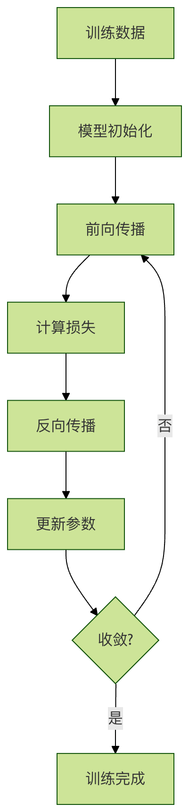

機械学習の基礎用語
機械学習を学ぶことは新しい言語を学ぶようなもので、まず基本的な語彙を身につける必要があります。これらの用語が機械学習の「言語システム」を構成しており、それらを理解することが深く学ぶための第一歩です。
ロボットに果物を教える場面を想像してみてください：
- データ：さまざまな果物の画像と情報
- 特徴：果物の色、形、大きさ、味
- ラベル：この果物の名前（リンゴ、バナナ、オレンジ）
- モデル：ロボットが学んだ「果物を認識する方法」
- トレーニング：ロボットに果物の認識を教えるプロセス
- 推論：ロボットが新しい果物を認識する能力
データ（Data）
データとは？
データは機械学習の「原材料」であり、料理人が料理に必要な食材のようなものです。データがなければ機械学習は実行できません。
データの種類
1. 構造化データ
特徴：明確な形式と整理方法があり、表のように整然としている
# 構造化データの例：学生情報テーブル例
students_data = {
'名前': ['張三', '李四', '王五'],
'年齢': [18, 19, 20],
'成績': [85, 92, 78],
'クラス': ['1組', '2組', '1組']
}
df = pd.DataFrame(students_data)
print(df)
出力：
姓名 年龄 成绩 班级 0 张三 18 85 一班 1 李四 19 92 二班 2 王五 20 78 一班
2. 非構造化データ
特徴：固定の形式がなく、特別な処理が必要
例：
- テキスト：コメント、記事、メール
- 画像：写真、医用画像
- オーディオ：音声、音楽
- 動画：監視カメラ映像、映画
# 非结构化数据示例：文本和图像 text_data = "这个产品质量很好，我很满意！" # image_data = 一张产品的照片 # audio_data = 顾客的语音评价
データ品質の重要性
ガーベジイン、ガーベジアウト（Garbage In, Garbage Out）は機械学習の重要な原則です。データ品質がモデルの性能を直接決定します。
例
import numpy as np
import pandas as pd
# さまざまな問題を含むデータを作成
problematic_data = {
'価格': [100, 200, None, 300, -50], # 欠損値と異常値
'評価': [4.5, '良い', 3.8, 4.2, 5.0], # データ型の不整合
'売上': [1000, 1200, 800, 1500, '多い'] # テキストと数値の混在
}
df = pd.DataFrame(problematic_data)
print("問題のあるデータ：")
print(df)
print("\nデータ問題分析：")
print(f"欠損値の数：{df.isnull().sum().sum()}")
print(f"データ型：\n{df.dtypes}")
特徴（Feature）
特徴とは？
特徴はデータの「観察可能な属性」であり、人の特徴を説明するのと同じです：身長、体重、髪の色、性格など。機械学習では、特徴は予測を行うための根拠となります。
特徴選択の重要性：
- 良い特徴はモデルの効果を倍増させる
- 悪い特徴はモデルの効率を低下させる
- 特徴量エンジニアリングはしばしばモデル性能を左右する鍵となる
特徴の種類
1. 数値特徴
特徴：数値で表現でき、数学演算が可能
# 数值特征示例
numerical_features = {
'年龄': [25, 30, 35, 40],
'收入': [5000, 8000, 12000, 15000],
'身高': [165, 170, 175, 180]
}
2. カテゴリ特徴
特徴：異なるカテゴリを表し、数学演算はできない
# 类别特征示例
categorical_features = {
'性别': ['男', '女', '男', '女'],
'学历': ['本科', '硕士', '博士', '本科'],
'城市': ['北京', '上海', '广州', '深圳']
}
3. テキスト特徴
特徴：モデルで使用するために特別な処理が必要
# 文本特征示例
text_features = {
'评论': [
'这个产品很好用，推荐购买！',
'质量一般，不太满意。',
'性价比高，值得入手。'
]
}
特徴量エンジニアリングの例
例
import pandas as pd
import numpy as np
# 生データ：住宅情報
house_data = {
'面積': [80, 120, 60, 150, 90],
'寝室数': [2, 3, 1, 4, 2],
'建築年': [2000, 2010, 1995, 2015, 2005],
'価格': [200, 350, 150, 500, 280]
}
df = pd.DataFrame(house_data)
# 新しい特徴を作成
df['築年数'] = 2023 - df['建築年'] # 住宅の築年数
df['平方メートルあたりの価格'] = df['価格'] / df['面積'] # 単価
df['寝室面積比'] = df['寝室数'] / df['面積'] * 100 # 寝室の割合
print("元データ + 新しい特徴：")
print(df)
# 特徴量の重要度分析
correlation = df.corr()['価格'].sort_values(ascending=False)
print("\n特徴と価格の相関：)
print(correlation)
ラベル（Label）
ラベルとは？
ラベルは予測したい「答え」であり、試験問題の正解のようなものです。教師あり学習では、各データサンプルには対応するラベルがあります。
ラベルの役割：
- モデルの学習方向を導く
- モデルの学習効果を評価する
- 問題のタイプを定義する
ラベルの種類
1. 分類ラベル
特徴：離散的なカテゴリ値
# 分类标签示例
classification_labels = {
'邮件类型': ['垃圾邮件', '正常邮件', '垃圾邮件', '正常邮件'],
'情感倾向': ['正面', '负面', '中性', '正面'],
'疾病诊断': ['患病', '健康', '健康', '患病']
}
2. 回帰ラベル
特徴：連続的な数値
# 回归标签示例
regression_labels = {
'房价': [250000, 320000, 180000, 450000],
'温度': [25.5, 28.3, 22.1, 30.0],
'股票价格': [100.5, 105.2, 98.7, 110.3]
}
ラベル品質の重要性
# 标签质量问题示例
import numpy as np
# 模拟图像分类任务中的标签问题
image_data = ['cat1.jpg', 'dog1.jpg', 'cat2.jpg', 'dog2.jpg']
problematic_labels = ['猫', '犬', '猫咪', '狗'] # 标签不一致
# 标签标准化
label_mapping = {
'猫': 'cat', '猫咪': 'cat',
'犬': 'dog', '狗': 'dog'
}
standardized_labels = [label_mapping[label] for label in problematic_labels]
print("原始标签：", problematic_labels)
print("标准化标签：", standardized_labels)
モデル（Model）
モデルとは？
モデルは機械学習アルゴリズムがデータから学んだ「規則」または「パターン」であり、学生が教科書から学ぶ知識のようなものです。
モデルの本質：
- 数学関数：特徴を入力し、予測を出力する
- パラメータの集合：学んだ規則の具体的な表現
- 決定規則：入力から出力を得る方法
モデルの表現
例
import numpy as np
import matplotlib.pyplot as plt
# データをシミュレート
X = np.array([1, 2, 3, 4, 5])
y = np.array([2, 4, 6, 8, 10])
# 線形モデル：y = w * x + b
# 学習されたパラメータ：w = 2, b = 0
w, b = 2, 0
def linear_model(x):
"""線形モデル関数"""
return w * x + b
# 予測
predictions = linear_model(X)
# 可視化
plt.scatter(X, y, color='blue', label='実データ')
plt.plot(X, predictions, color='red', label='モデル予測')
plt.xlabel('入力 X')
plt.ylabel('出力 y')
plt.title('線形モデルの例')
plt.legend()
plt.grid(True)
plt.show()
print(f"モデルパラメータ：w = {w}, b = {b}")
print(f"予測結果：{predictions}")
モデルの複雑さ
例
from sklearn.preprocessing import PolynomialFeatures
from sklearn.linear_model import LinearRegression
import numpy as np
# 非線形データを生成
np.random.seed(42)
X = np.random.rand(20, 1) * 10
y = np.sin(X) + np.random.randn(20, 1) * 0.1
# 単純なモデル（線形）
simple_model = LinearRegression()
simple_model.fit(X, y)
# 複雑なモデル（高次多項式）
poly_features = PolynomialFeatures(degree=10)
X_poly = poly_features.fit_transform(X)
complex_model = LinearRegression()
complex_model.fit(X_poly, y)
# 可視化
X_test = np.linspace(0, 10, 100).reshape(-1, 1)
X_test_poly = poly_features.transform(X_test)
plt.scatter(X, y, color='blue', label='トレーニングデータ')
plt.plot(X_test, simple_model.predict(X_test), color='green', label='単純なモデル')
plt.plot(X_test, complex_model.predict(X_test_poly), color='red', label='複雑なモデル')
plt.xlabel('X')
plt.ylabel('y')
plt.title('モデルの複雑さの比較')
plt.legend()
plt.grid(True)
plt.show()
トレーニング（Training）
トレーニングとは？
トレーニングはモデルが学習するプロセスであり、学生が授業で知識を学ぶのと同じです。トレーニング中、モデルはパラメータを調整し続け、予測結果が徐々に実際のラベルに近づくようにします。

トレーニングプロセスの例
例
import numpy as np
import matplotlib.pyplot as plt
# トレーニングデータを生成
np.random.seed(42)
X = np.random.rand(50, 1) * 10
y = 3 * X + 2 + np.random.randn(50, 1) * 2
# モデルパラメータを初期化
w, b = 0.0, 0.0
learning_rate = 0.01
epochs = 100
# トレーニングプロセスの記録
loss_history = []
# トレーニングループ
for epoch in range(epochs):
# 順伝播
y_pred = w * X + b
# 損失の計算（平均二乗誤差）
loss = np.mean((y_pred - y) ** 2)
loss_history.append(loss)
# 勾配の計算
dw = np.mean(2 * X * (y_pred - y))
db = np.mean(2 * (y_pred - y))
# パラメータの更新
w -= learning_rate * dw
b -= learning_rate * db
if epoch % 10 == 0:
print(f"Epoch {epoch}: Loss = {loss:.4f}, w = {w:.4f}, b = {b:.4f}")
# トレーニングプロセスの可視化
plt.figure(figsize=(12, 4))
plt.subplot(1, 2, 1)
plt.plot(loss_history)
plt.xlabel('Epoch')
plt.ylabel('Loss')
plt.title('トレーニング損失の変化')
plt.grid(True)
plt.subplot(1, 2, 2)
plt.scatter(X, y, color='blue', label='トレーニングデータ')
plt.plot(X, w * X + b, color='red', label='トレーニング後のモデル')
plt.xlabel('X')
plt.ylabel('y')
plt.title('トレーニング結果')
plt.legend()
plt.grid(True)
plt.tight_layout()
plt.show()
print(f"最終モデルパラメータ：w = {w:.4f}, b = {b:.4f}")
推論（Inference）
推論とは？
推論トレーニング済みモデルを使用して予測を行うプロセスで、学生が学んだ知識で試験問題を解くようなものです。
推論プロセスの例
例
import numpy as np
# トレーニング済みの住宅価格予測モデルがあると仮定します
class HousePriceModel:
def __init__(self):
# トレーニング済みのパラメータを模擬します
self.feature_weights = {
'面積': 2.5,
'寝室数': 10.0,
'築年数': -1.0,
'立地評価': 50.0
}
self.bias = 50.0
def predict(self, features):
"""
トレーニング済みモデルを使用して住宅価格を予測
"""
price = self.bias
for feature_name, feature_value in features.items():
if feature_name in self.feature_weights:
price += self.feature_weights[feature_name] * feature_value
return price
# トレーニング済みモデルを作成
model = HousePriceModel()
# 推論：新しい住宅価格を予測
new_houses = [
{'面積': 80, '寝室数': 2, '築年数': 5, '立地評価': 8},
{'面積': 120, '寝室数': 3, '築年数': 2, '立地評価': 9},
{'面積': 60, '寝室数': 1, '築年数': 10, '立地評価': 6}
]
print("住宅価格予測結果：")
for i, house in enumerate(new_houses, 1):
predicted_price = model.predict(house)
print(f"住宅{i}：予測価格 {predicted_price:.2f} 万元")
# バッチ推論
def batch_predict(model, house_list):
"""一括予測"""
return [model.predict(house) for house in house_list]
batch_prices = batch_predict(model, new_houses)
print(f"\n一括予測結果：{batch_prices}")
完全な例：データから推論まで
例
import numpy as np
import pandas as pd
from sklearn.model_selection import train_test_split
from sklearn.linear_model import LinearRegression
from sklearn.metrics import mean_squared_error, r2_score
# 1. データ準備
np.random.seed(42)
n_samples = 200
# 特徴データを生成
area = np.random.normal(100, 30, n_samples) # 面積
bedrooms = np.random.randint(1, 5, n_samples) # 寝室数
age = np.random.randint(0, 20, n_samples) # 築年数
location_score = np.random.randint(1, 10, n_samples) # 立地評価
# ラベル（住宅価格）を生成 - 特徴の線形結合にノイズを加える
price = (area * 2.5 + bedrooms * 20 + age * -2 + location_score * 15 +
np.random.normal(0, 50, n_samples))
# データフレームを作成
data = pd.DataFrame({
'面積': area,
'寝室数': bedrooms,
'築年数': age,
'立地評価': location_score,
'価格': price
})
print("データ例：")
print(data.head())
# 2. トレーニングセットとテストセットに分割
features = ['面積', '寝室数', '築年数', '立地評価']
X = data[features]
y = data['価格']
X_train, X_test, y_train, y_test = train_test_split(X, y, test_size=0.2, random_state=42)
print(f"\nトレーニングセットのサイズ：{X_train.shape)
print(f"テストセットのサイズ：{X_test.shape)
# 3. モデルのトレーニング
model = LinearRegression()
model.fit(X_train, y_train)
print(f"\nモデルパラメータ：")
for feature, coef in zip(features, model.coef_):
print(f"{feature}: {coef:.2f}")
print(f"切片: {model.intercept_:.2f}")
# 4. モデルの評価
y_train_pred = model.predict(X_train)
y_test_pred = model.predict(X_test)
train_mse = mean_squared_error(y_train, y_train_pred)
test_mse = mean_squared_error(y_test, y_test_pred)
train_r2 = r2_score(y_train, y_train_pred)
test_r2 = r2_score(y_test, y_test_pred)
print(f"\nモデル評価：")
print(f"トレーニングセット MSE: {train_mse:.2f}, R²: {train_r2:.2f}")
print(f"テストセット MSE: {test_mse:.2f}, R²: {test_r2:.2f}")
# 5. 推論（新しいデータの予測）
new_houses = pd.DataFrame({
'面積': [85, 120, 65],
'寝室数': [2, 3, 1],
'築年数': [3, 1, 8],
'立地評価': [7, 9, 5]
})
predictions = model.predict(new_houses)
print(f"\n新しい住宅価格の予測：")
for i, price in enumerate(predictions, 1):
print(f"住宅{i}: {price:.2f} 万元")
一般的な機械学習ネットワークの種類
| モデルタイプ | 中国語の正式名称 | 英語の略称 | 主な適用シーン | メリット | デメリット |
|---|---|---|---|---|---|
| 従来の機械学習 | 決定木 | DT | 分類、回帰、特徴重要度分析 | 解釈可能性が高く、データの正規化が不要 | 過学習しやすく、ノイズに敏感 |
| ランダムフォレスト | RF | 分類、回帰、異常検知 | 過学習に強く、安定性が高い | 高次元データでは計算コストが高い | |
| ロジスティック回帰 | LR | 二値分類、確率予測 | トレーニングが速く、解釈可能性が高い | 非線形関係の適合が難しい | |
| サポートベクターマシン | SVM | 分類、高次元・小サンプルデータ | 汎化能力が強く、特徴次元が高いシーンに適している | 大規模データではトレーニングが遅く、パラメータ調整が複雑 | |
| ナイーブベイズ | NB | テキスト分類、スパムメール識別 | トレーニング速度が非常に速く、欠損データに敏感でない | 特徴が独立であると仮定するが、実際のシーンでは成り立たない場合がある | |
| XGBoost | XGBoost | 分類、回帰、コンペティションレベルのタスク | 精度が高く、並列計算をサポートし、正則化を内蔵 | 過学習しやすく、ハイパーパラメータに敏感 | |
| LightGBM | LightGBM | 大規模データの分類、回帰 | トレーニング速度が速く、メモリ使用量が少ない | 小規模データセットではXGBoostほど安定しない場合がある | |
| 深層学習 | 人工ニューラルネットワーク | ANN | 単純な分類、回帰タスク | 構造が単純で、理解しやすい | 高次元・複雑なデータの処理が難しい |
| 畳み込みニューラルネットワーク | CNN | 画像認識、物体検出、動画分析 | 空間特徴を自動抽出し、パラメータを共有 | トレーニングには大量のデータと計算リソースが必要 | |
| リカレントニューラルネットワーク | RNN | シーケンスデータ処理、テキスト生成 | 可変長シーケンスを処理可能 | 勾配消失/爆発問題があり、長距離依存を捉えにくい | |
| 長短期記憶ネットワーク | LSTM | 長いシーケンスのテキスト翻訳、音声認識 | RNNの長距離依存問題を解決 | 構造が複雑で、トレーニング速度が比較的遅い | |
| ゲート付き回帰ユニット | GRU | シーケンスデータ処理、感情分析 | LSTMより構造が単純で、トレーニングが速い | 長いシーケンスでは性能がLSTMよりわずかに劣る | |
| 生成敵対ネットワーク | GAN | 画像生成、スタイル変換、データ拡張 | 生成データの品質が高く、多様性に優れる | トレーニングが不安定で、モード崩壊しやすい | |
| Transformer | Transformer | 自然言語処理、マルチモーダルタスク | 並列計算の効率が高く、長距離依存を捉える能力が強い | 計算コストが高く、小規模データセットでは過学習しやすい | |
| オートエンコーダー | AE | データ圧縮、異常検知、特徴抽出 | 教師なし学習で、構造が単純 | 生成データの品質は通常GANより低い | |
| グラフニューラルネットワーク | GNN | ソーシャルネットワーク分析、分子構造予測 | グラフ構造データを処理し、ノード間の関係を発掘 | トレーニングが難しく、グラフ構造の前処理への要求が高い |
クリックしてノートを共有
<p style="font-size:14px;">ノートはこの記事の内容を拡張したものである必要があります！</p><br> <p style="font-size:12px;"><a href="../tougao.html" target="_blank">記事の投稿は、ここをクリック</a></p> <p style="font-size:14px;"><a href="../w3cnote/runoob-user-test-intro.html" target="_blank">登録招待コードの取得方法</a></p> <h3 class="text-muted"><i class="fa fa-info-circle" aria-hidden="true"></i> ノートを共有する前に<a href=";.html" class="runoob-pop">ログイン</a>が必要です！</h3> <p><a href="../w3cnote/runoob-user-test-intro.html" target="_blank">登録招待コードの取得方法</a></p>